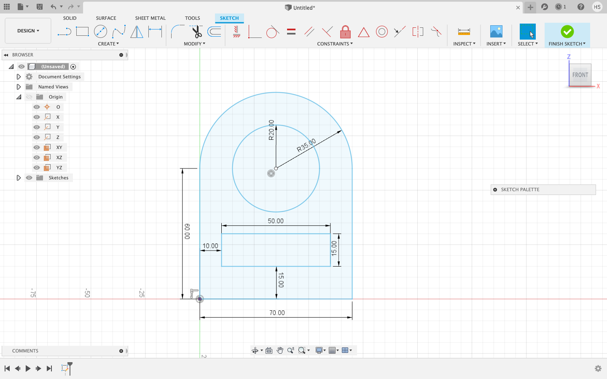
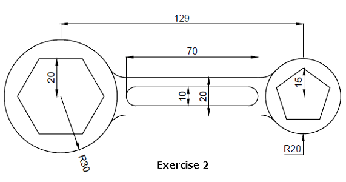
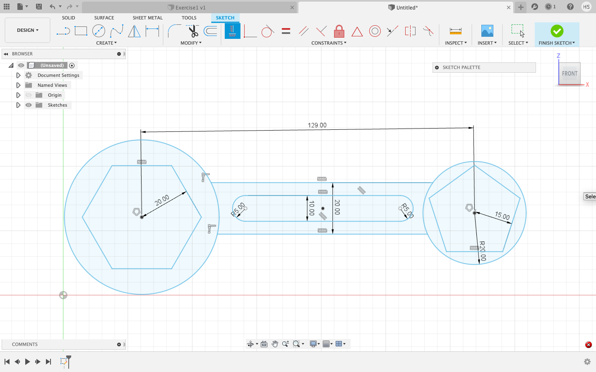
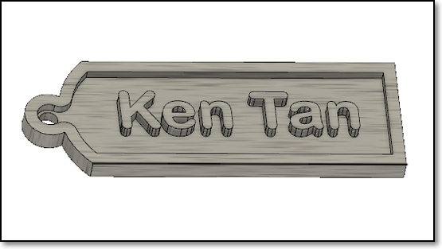
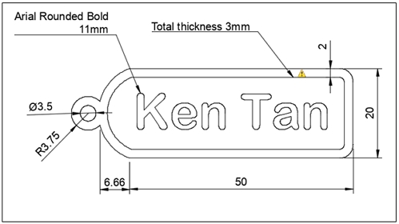
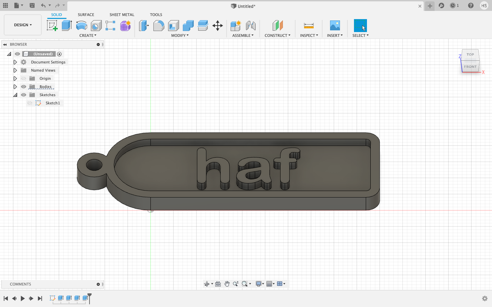
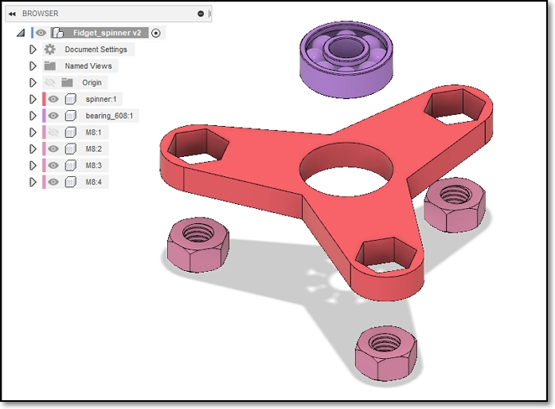
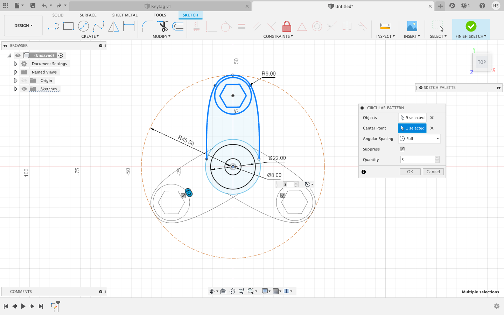
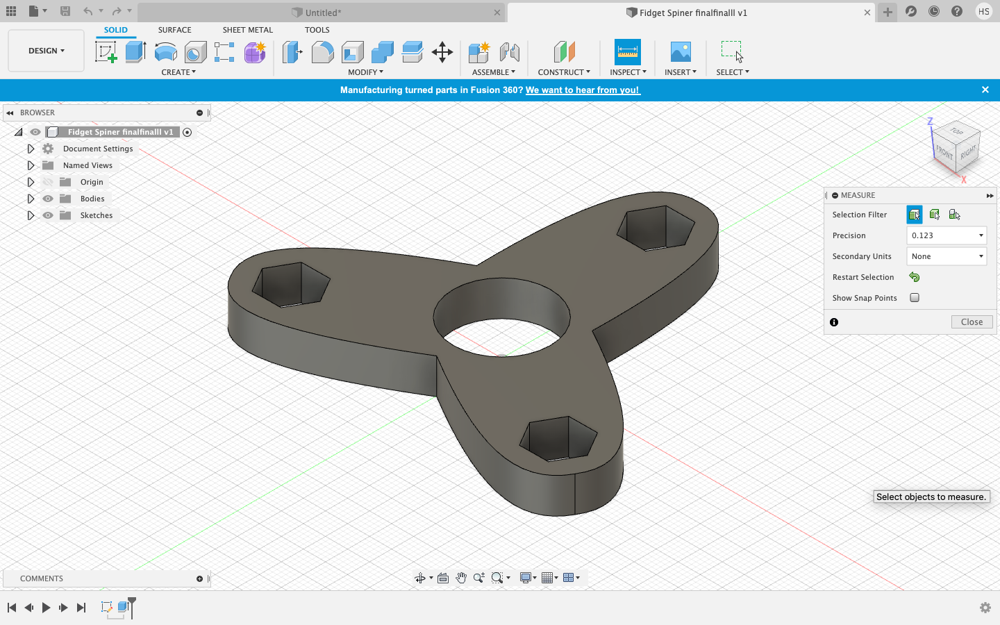

Fusion 360
Fusion 360 is a very useful software for web designing. We can use it do design 3D prints, models and even larger items such as furniture.
In this first excersise, I was tasked to start off with doing this: 
- To start off, I created a new sketch and then I selected a plane. For this sketch, I chose the front plane.
- I first started off with a rectangle of 60mm x 70mm. I then added a circle with a diameter of 35mm. In the middle of the circle I added another circle of 20mm.
- Using the 'Trim' tool, I trimmed the bottom of the larger circle.
- I created a new rectangle of 50mm x 15mm. To ensure that the rectangle 15mm above the base, I added a line of 15mm length vertically from the base. I placed the line in the center of the base so that when I line up the rectangle with the line, the rectangle will automatically be in the center of the larger rectangle. Delete the line, and it is done! Below is how mine turned out.

In the second excercise, I was tasked to do this:
|  |
|
Below was how it turned out:

We then started to do models. These models are 3D, hence they incorporate actions like extruding or revolving to make your original sketch 3D.
The first model I made is a keytag. The example looked like this:
|  |  |
- I first started to do the basic sketch first. I followed the picture above for the shape and also the dimensions.
- I then used the off set function to create the border for the name tag. I selected the main part and set the offset to -2mm so that it will go inwards.

- I then added text on the keytag found under the create tab.
- Once I have finished the sketch, click on 'extrude'. Then you can choose which parts to extrude. I chose the border and the lettering to be extruded by 4mm. The base shall be extruded by 2mm. Do note to draw a base in your sketch as personally when I did it, I forgot about it resulting in nothing for me to extrude.

The next model I did is a fidget spinner. This was how it is supposed to look like:
|  |
- I first drew the center piece, and followed by one arm. Then, I used circular pattern to duplicate it into 3 arms.
- I then extruded the whole piece by 8mm.
|  |
|  |